(1) Info/Status Bar (Log):
Displays version, hints/tips, information, and warnings. Important messages will flash. Click to open the app log.
(2) Menu Bar:
Access to many of the features included with 7th Heaven, organized by category.
(3) Mod Info Panel:
Displays informational details about the current mod you have selected (either in My Mods or Browse Catalog tab view).
(4) Mod Sidebar:
Contains buttons that control the view, sort order, settings, and status of your mods.
(5) My Mods Tab:
Displays the list of mods that you have installed into your mod library. From here you can customize your view of the list, and select, organize, activate/deactivate, change the settings of, or uninstall your mods. Tip: You can right-click this tab to open your mod library folder in Windows.
(6) Browse Catalog Tab:
Displays a list of all mods that are available for download from the catalog subscriptions you have added. Tip: You can right-click this tab to open your General Settings window in order to change your catalog subscription links.
(7) Search Bar:
You can type in a search query to quickly find mods, or click the drop down arrow to filter mods by tags, categories, or catalog subscriptions (filter by catalog subscription available on Browse Catalog tab only).
Displays the version of 7th Heaven you are using when you first start the program, as well as random hints or tips to help you. At various times while you use 7th Heaven, the info bar will display information to you such as when a task is complete or when a problem occurred. The infobar will flash important information such as warnings to help grab your attention. You can click on the info bar to open 7th Heaven's detailed log. This can be helpful to troubleshoot problems or to send to someone trying to assist you or to send to a 7th Heaven developer to help find and fix errors in the program. The log is reset daily and 7 days of logs are kept.
Gives you access to many of the features included with 7th Heaven. It is organized as follows: Play: Click when ready to play Final Fantasy VII. 7th Heaven will use the 'Game Launcher' to check, prepare, apply your settings, then launch the game for you. The drop down arrow next to the Play button gives you access to more advanced options that you can use when starting your game. Settings: Access various settings such as 'Change Color Theme', 'General Settings', 'Game Driver', 'Game Launcher' and 'Profiles'. These features are explained in the Features and Tools section. Tools: Access various tools such as the 'Catalog/Mod Creation Tool', 'Chunk Tool', and 'IRO Tools'. These features are explained in the Features and Tools section. Help: Opens the onboard Help for 7th Heaven. It contains information about 7th Heaven, as well as a detailed guide for using 7th Heaven, a guide to assist modders, and troubleshooting help when you have problems.
Released: The date the mod was released. MM/DD/YYYY format.
Category: New in 7th Heaven 2.0* - The general content of the mod, or what the mod affects in the game. Categories are important because mods are auto-sorted (when you click Auto Sort
) by category then alphabetically by name, among other things. This is to assist you with sorting your mods for best compatibility with other mods that you may have installed.
If an older mod that hasn't been updated for 7th Heaven 2.0 is installed, it will display a category of 'Unknown'. You can manually set/change the category so that 7th Heaven better knows how to sort it. Inform your mod author(s) that they should update their mod to support categories!
Version: The version number of the mod.
Update: If an update is found for the mod, click the 'Update Available' link to download the update. You can click the drop downto set update check options for each individual mod such as 'Auto-Update/Install', 'Ignore', and 'Notify'. If you'd rather all mods update automatically all the time, you can set that option in General Settings.
Description: Information about what the mod is, or what it does. Link: A link to an internet location usually where you can find more information or support for the mod, if provided by the mod author.
Readme: Additional information or instructions for using and configuring the mod, if provided by the mod author. New in 7th Heaven 2.0* - HTML readme files are now supported. This is to allow for greater formatting of the Readme.html file as well as allowing for embedded base64 encoded images.
Release Notes: New in 7th Heaven 2.0* - What's new with this release version of the mod, if provided by the mod author.
Preview Image: At the bottom of the Mod Info Panel, a preview image showcasing the logo or features of the mod will display, if provided by the mod author.
Move Up: Moves a selected mod up (higher priority) in your load order by one step. Tip: You can right-click this button to move the mod to the top of your list. You can also drag and drop to reorder your mods.
Move Down: Moves a selected mod down (lower priority) in your load order by one step. Tip: You can right-click this button to move the mod to the bottom of your list. You can also drag and drop to reorder your mods.
Auto Sort: Automatically sorts your mod list in three ways: First by category where certain categories get priority over others, second by Name which is done alphabetically, and third by analyzing mod sort orders specified by mod authors in their mod.xml files. This is to help take some guesswork out of organizing your mods and to provide the best game experience.
Configure Mod: Opens the configure mod window where you can change the various settings available in your selected mod. Not all mods have configurable settings specified by the mod author. A mod must be active before you can configure it. See Configure Mod for more info.
Activate All: Quickly activate all mods in your My Mods Tab.
Deactivate All: Quickly deactivate all mods in your My Mods Tab.
Refresh: Refreshes all information in your My Mods Tab from your mod library specified in General Settings. Useful if you've added, removed, or updated mod files in your mod library and you want the changes to appear in your My Mods Tab. While on the Browse Catalog Tab, forces an update of your catalog subscriptions.
Uninstall Mod: Deletes the selected mod from your file system and My Mods Tab. Prompts before deleting.
Reset Columns: Resets columns to defaults on the current tab.
Download: Browse Catalog Tab only. Downloads the selected mod from the catalog.
Tip: You can also double-click a mod to download it.
Pause Download: Browse Catalog Tab only. Pauses the currently selected download. Not all downloads can support the pause function.
Resume Download: Browse Catalog Tab only. Resumes the currently selected download.
Cancel Download: Browse Catalog Tab only. Cancels the currently selected download.
To Get Here: Click the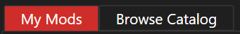tab. Tip: Right-click the tab to open your Mod Library folder in Windows.
What it is: A list of all of the mods that you have installed, whether it was from the Import Mod window, the Browse Catalog Tab, or from Shell Integration. You will see basic information about each mod, including Name, Author, Category, and its Active status. Mods are loaded in order from top (highest priority) to bottom (lowest priority). This is IMPORTANT! See the Load Order section below for more information about organizing your mods correctly.
Column View: You can drag and drop the column headers (Name, Author, Category, Active) left and right to change the position of the columns. You can also resize them by clicking the bars in between each column and dragging them left or right. 7th Heaven will remember your column view settings each time you run the program. If you ever want to reset your columns back to their default views, click . Note: You cannot sort your mod list on the 'My Mods' Tab by clicking the headers as this is counter-intuitive to the Load Order and how 7th Heaven applies your mods. Use the Mod Sidebar instead.
Clicking a Mod: Selecting a mod will display detailed info in the Mod Info Panel.
Activating/Deactivating a Mod: You can click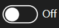 or to toggle activating and deactivating your mod. Active mods will apply to and affect your game. Inactive mods will not.
Configure Mod: Clickto change the settings for the selected mod. See the Mod Sidebar and Configure Mod sections for more information.
Category: Categories tell you the general contents of a mod or what it affects in game. More importantly, categories are used to help you and 7th Heaven determine the best Load Order for your mods. Categories are new in 7th Heaven 2.0, so older mods may display 'Unknown' for the category. If the category is 'Unknown'. please inform the mod author that they should update their mod to include new category information. 7th Heaven allows you to manually set/change the category so that the mod can be Auto Sorted (see below).
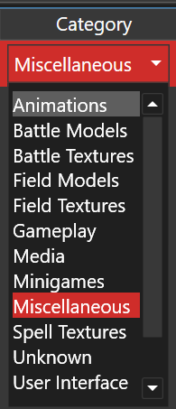
Load Order: 7th Heaven applies the contents of your activated mods to your game in order from top to bottom. It's a game of 'King of the Hill', and the mod on top always wins. This is important to keep in mind so you can organize your mods appropriately. For example, let's say you have 2 music mods. Let's pretend that Music Mod 'A' contains only 1 music track, the Gold Saucer Theme. It's your favorite version of the song and you want to hear it in the game. Let's also pretend that Music Mod 'B' contains every music track in the game, including the Gold Saucer Theme, but it's not the version of the theme you like best. In this example, if Music Mod 'A' is ABOVE Music Mod 'B' in your list, you will hear your favorite Gold Saucer Theme when you visit the Gold Saucer. Why? Because 7th Heaven will 'see' the Gold Saucer Theme from Music Mod 'A' FIRST and will apply it to the game. However, let's say you put Music Mod 'B' on top of Music Mod 'A' in your Load Order instead. You will NEVER hear your favorite Gold Saucer Theme that is in Music Mod 'A'. Why? Because 7th Heaven will 'see' the Gold Saucer Theme from Music Mod 'B' first, and will therefore ignore the song in the mod (Music Mod 'A') below it. That is a very basic example of how your Load Order affects the game. It gets more complicated when you add in multiple mods that affect multiple things in the game like textures for battle screens, the world map, spells, 3D character models, music, movies, gameplay, language and translation mods, etc.
In general, it is a good idea to only have ONE mod from a given category active at a time. If you switch between multiple mods in the same category, deactivate the mod not in use to prevent conflicts. Always deactivate mods that you are not using. Do NOT install and activate every conceivable mod because you 'want all the things'. That is NOT how modding works! You will not see everything, it will heavily slow down your game, and can even cause game crashes to occur.
Sorting your Mods: 7th Heaven includes a number of ways to help you sort your mods and make things a little easier for you. You can change the order of your mods by dragging and dropping them in the list, or by using the controls in the Mod Sidebar. New in 7th Heaven 2.0 is Auto Sort. This is very useful because it will sort your mods in order from top to bottom based on known mods, catalogs, and categories that work best with the least amount of conflicts. Mod authors can even specify in the programming of their mod (mod.xml) that their mod should go above or below another mod, or even what options in other mods should be turned on/off or selected in order to make the mod compatible with their own. Clicking Auto Sortwill do this for you automagically.
To Get Here: Click the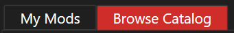tab. Tip: Right-click the tab to open General Settings to change your catalog subscriptions.
What it is: A list of all of the mods that are available for download from your catalog subscription links. Popular catalog subscription links are included with 7th Heaven by default, but you can add more in General Settings.
Column View: You can drag and drop the column headers (Name, Author, Released, Category, Size, and Installed) left and right to change the position of the columns. You can also resize them by clicking the bars in between each column and dragging them left or right. You can also sort the list by a specific column by clicking the column header (Browse Catalog tab only). 7th Heaven will remember your column view settings each time you run the program. If you ever want to reset your columns back to their default views, click .
Clicking a Mod: Selecting a mod will display detailed info in the Mod Info Panel.
Inst. (Installed): Indicates whether or not the mod is already downloaded and in the My Mods Tab.
Force Update All Subscriptions/Refresh Catalog: While updates to catalog subscriptions are checked on startup of 7th Heaven, you can click this button to force all subscriptions to update and a current refreshed catalog to display immediately.
Download Mod: Downloads the mod from the catalog and into your My Mods Tab. Tip: You can also double-click to start a download. You can monitor the progress of your downloads in the Downloads area at the bottom of the window. Note: You are limited to 1 mod downloading at a time, but you can queue up as many as you want. This is to prevent abuse of starting and not finishing multiple mods at a time. The mods are usually hosted on free services like Mega or Google Drive which have timed data usage limits (such as daily). You might try downloading the mod again later. *New in 7th Heaven 2.0: 7th Heaven now supports external links for mod downloads. So, if there is a problem direct downloading a mod, 7H can prompt you to go to a web site (like Nexus Mods) to download the mod instead. The Catalog creators must enable and take advantage of the new iros://ExternalURL/ links feature in their catalogs for this to work.
Pause/Resume Download/: Pause or Resume downloading the selected mod in the downloads window. Not all links support pause/resume so the buttons may not be activated.
Cancel Download: Cancels downloading the selected mod in the downloads window.
Search Box: Start typing a search query in the text box and 7th Heaven will start searching immediately as you type. You will see the results show in your My Mods Tab or Browse Catalog Tab list. 7th Heaven searches the mod Name, Author, Category, and Description.
Filters: Click the drop down arrow in the Search Box to pop up a list of tags you can filter by, such as categories. Under the Browse Catalog Tab, you will see additional tags such as filtering by Catalog Name or other tags specified by the catalog subscription author. Click on the drop down arrow again to dismiss the filter dialog and apply your selected filters.
To Get Here: Select an activemod in your My Mods Tab then clickin your Mod Sidebar. Alternatively, you can double-click an active mod.
What it is: Here you can configure the options that are available for your mod. Not all mods have configurable options.
How to Use: The available options for your mod will be in a list on the left. Select an item in the list to configure, and you will see the configuration settings on the right. The configuration options will be different for every mod. They can be as simple as a toggle switchto turn something on or off, or you might have a drop down list of multiple options to select from. As you select different options, the mod author may display a preview image of that feature of their mod showcasing how your selections affect the game. For music mods, you may also see a music 'Preview' button on the bottom (if the mod author supplied previews). Clicking the 'Preview' button will allow you to hear the selection. Click 'Stop' to stop playing the audio. Click the 'Save' button to save your settings for this mod, or 'Cancel' to abort any changes. If you want to revert the mod back to its standard configuration, click the 'Restore Mod Defaults' button, then click 'Save'.
Note: 7th Heaven will remember the options you have set for your mod even if you deactivate then reactivate a mod, as long as that mod stayed in your library.
Mod Compatibility: You may see that some options are disabled and cannot be changed. You will notice a warning at the bottom of the window informing you of why the option is disabled. This is because mod authors may have programmed certain compatibility requirements into their mods in order to work well with other mods you may have installed. For example, an option in Mod 'A' might break something else in Mod 'B', and therefore the author for Mod 'B' may require that the specific option in Mod 'A' be turned off so that their mod works properly in the game. The Game Launcher will check for mod conflicts and inform you of any problems when you click 'Play'.
To Get Here: Click 'Tools' in the Menu Bar, then 'Catalog/Mod Creation Tool'.
What it is: These tools are useful for modders and catalog creators. The 'Create Mod' tab helps you to easily load (from existing), generate (update existing or create new), and save a mod.xml file. It is only used to generate the basic info needed. To learn more about creating mods, look at the Creating Mods Section and search the Qhimm Forums. The 'Create Catalog' tab helps you to generate an XML file to use as a catalog subscription. To fully create a catalog, you would need to upload your mod files to a file hosting service somewhere. Use the tool to generate a list of mods for your catalog when you supply the information and download links. Upload the XML file to a server somewhere such as pastebin.com, add the link to your catalog to 7th Heaven, and watch your list of mods load up in the Browse Catalog Tab.
How to Use (Create Mod Tab): A randomly generated unique ID is automatically put into the ID text box at the top for you. This ID is important! It allows 7H to identify your mod so that it can check when there are updates available for it in a catalog subscription, and for auto-sort and compatibility reasons. This ID should also be used to identify your mod if it is being added to a catalog (your mod.xml and the catalog should match for your mod). Give your mod a name, and select a Category to give it from the drop down (helps with auto-sort). Version should be in the format x.xx like 1.00. Select a Preview Image you want to use in your mod by clicking. Be sure you copy the image file to the root of your mod folder. Continue to fill out the rest of the fields which should be self-explanatory, then click the 'Generate' button. This will create (or update if you previously clicked 'Load' to open an existing mod.xml file) the XML needed for your mod.xml file. If you're happy with the results, click on the 'Save' button to save your mod.xml file.
How to Use (Create Catalog Tab): Click 'Load' if you have an existing catalog xml file you want to edit. Click on the 'Import' button if you have an existing mod that you want to add to your catalog. Select the mod or its mod.xml file and the information from it will be displayed in the fields. If you don't have an existing mod to load information from, you will need to manually enter data into the fields. For your download link where the mod will be downloaded from, select the 'Link Kind', whether it is a Google Drive (GDrive) link, or a 'MegaSharedFolder' or other URL (standard web address). Paste the download link into the 'Link Source' field. Links will be converted into an iros:// protocol link. iros:// links are formatted like 'iros://Url/http$website.com/myfile.iro' for a URL web address. For GDrive, go into your Google Drive and create a shareable link. The link would be something like 'https://drive.google.com/open?id=1mX0q6Yb4cgYNYkAmd8ocSfGu0c2QHT0B' the link would look like 'iros://GDrive/fileID' where 'fileiD' is the '1mX0q6Yb4cgYNYkAmd8ocSfGu0c2QHT0B' part of the link. Once you have all of the fields filled out, click on the 'Add' button in the top right corner. This will add that mod to the list for your catalog on the left. Repeat for any and all mods you want to include in your catalog. Once you're finished adding mods to your list, click the 'Generate' button to display the XML for you catalog. Click the 'Save' button to save the output to a file that you can use to upload. Add the catalog subscription link that points to this file into 7th Heaven and check out and test your catalog.
How to Use (Mega Link Generator Tab): Paste a Mega folder ID into the text box, click "Generate Links", and it will generate a link for every file in that Mega shared folder. To get the folder ID, right-click the folder in Mega, ask for a link, and the folder ID is the part of the link beginning with the string !#F.
To Get Here: Click 'Tools' in the Menu Bar, then 'Chunk Tool'.
What it is: This tool is useful for modders. It allows you to extract only a portion of the flevel.lgp file into 'Chunks'. This is great if you need to distribute a portion of a customized flevel.lgp file in your mod without needing to include the entire file, to keep file sizes down and to lower conflicts with other mods. For example, if you're working on a translation mod, you can extract only 'Section 1 Field Script Dialog' instead of everything else like field models or backgrounds which can add to the file size or be modded by other mods.
How to Use: Select the flevel.lgp file you want to extract from by clicking, as well as an output folder where you want the chunks saved by clicking, check the boxes for all of the sections you want to extract, then click the 'Extract' button.
What it is: The Game Launcher is new in 7th Heaven 2.0. Its purpose is to make sure your game is ready to play, applies your settings, then starts the game. It does all of the following and more: Copies your game out of a system folder (like Program Files) if needed, checks that FF7 isn't already running, runs a mini "game converter" to copy files necessary for the game to be modded, backs up changed files, checks for mod conflicts, applies your selected controls to the game, updates the game's registry settings to make sure they are valid, applies the settings you specified in Game Launcher Settings (such as mounting the game disc, setting your audio output device, etc.), then launches FF7.
How to Use: Click 'Play' in the Menu Bar. The Game Launcher will automatically start readying your game, then launch it. The Game Launcher is only visible if you have 'Show Game Launcher' set toin the Game Launcher Settings. If it is set to, Game Launcher will still be working in the background, but you will only see status updates during launch in the Info/Status Bar (Log).
To Get Here: Click 'Help' in the Menu Bar. The Help documentation will open in your default web browser. (You're looking at it now).
What it is: Documentation to help you with installing Final Fantasy VII, and information on modding with and using 7th Heaven, and troubleshooting assistance.
How to Use: Click the section that you want to go to for more information. Help is divided into several sections:
What is 7th Heaven?: Information about what 7th Heaven is, how it works, what it does, and summary of What's New in this version.
Getting Started: Information about purchasing and installing Final Fantasy VII, and installing and running 7th Heaven.
Using 7th Heaven: This section. An overview and detailed information about the entire program. A general User's Guide.
Creating Mods: This section is for those of you that want to create your own mods for use in 7th Heaven. This focuses more on the modding features of 7th Heaven and how to make your mods work with 7th Heaven, not on modding FF7 itself. For learning how the game is structured and how to mod FF7 itself, there is plenty of information available on the Qhimm Forums.
Troubleshooting: 7th Heaven 2.0 was designed specifically to be a more user-friendly, all-in-one solution than previous versions. Many of the problems and manual steps you needed to do in the past are now gone. With that said, people will always run into issues once in a while, so check the troubleshooting section for your issue and possible solution. As new issues are found, they will be fixed if possible, or information about the issue will be added to this section with future releases. Of course, the Qhimm Forums are always available and up to date.
Double-click a mod (.iro file) from Windows. You must have the option 'Open Mod Files with 7th Heaven' turned on under General Settings.
Copy mod to your Mod Library folder in Windows, then click Refresh.
In certain situations, mods will only become visible when you have the setting 'Import Library Folder Mods Automatically' turned on in General Settings.
What it is: A dialog that assists you with importing mods into your Mod Library/My Mods Tab.
How to Use: See the individual tab options below for an explanation of each.
From IRO File Tab: Imports a single .iro mod file. Clickto open a file dialog. Locate the mod you want to import, select it, click 'Open', then click 'OK'. You will see the progress of importing the mod and whether or not it succeeded. If successful, you should now see the mod in your My Mods Tab.
From Folder Tab: Imports a single mod stored in folder format. Clickto open a select folder dialog. Locate the mod you want to import, click the folder, click 'Select Folder', then click 'OK'. You will see the progress of importing the mod and whether or not it succeeded. If successful, you should now see the mod in your My Mods Tab.
Batch Import Tab: Imports all mods found of any type from a folder. Clickto open a select folder dialog. Locate the folder that contains the mods you want to import, click the folder, click 'Select Folder', then click 'OK'. You will see the progress of importing the mods and whether or not they succeeded. If successful, you should now see the mods in your My Mods Tab.
Note about the Compression options. Compression does not alter the content of your mod or degrade the quality of anything in your mod. It is only like "zipping" (.zip file) your mod. Here is an explanation of each option:
Nothing: This is the default. No files will be compressed. Fastest option at both creating the .iro file and with file access.
Everything: This will compress all files in your mod. NOT recommended. Most file types used in mods (like .ogg, .png, or movies--depending on codec) are already compressed. So, selecting this option will compress already compressed files which A) offers no benefits in reducing file size and B) slows down your game, because 7th Heaven will need to uncompress the files before they can be used.
byExtension: This will compress all files except PNG, JPG, MP3, and OGG. This is probably a smart option if your goal is to reduce the file size of your mod and you don't have a lot of already compressed file types in your mod.
byContent: Use this option for the absolute best results. 7th Heaven will attempt to compress each file in your mod. If there is less than a 10% reduction in file size, it means there is little benefit to compressing that file, so it will remain uncompressed for maximum speed in file access. Any file that compresses well, will be compressed in order to lower file size. Creating the .iro file can take a long time on very large mods, however, because every file is analyzed and attempted to be compressed.
To Get Here: Click 'Tools>IRO Tools' in the Menu Bar.
What it is: A tool to assist with creating and extracting IRO (mod) files.
How to Use: See the individual tab options below for an explanation of each.
Pack IRO Tab: If you are finished with creating a mod in a folder, you can pack the entire mod into a single .IRO mod file for distribution. Usually (but not always), your mod folder will consist of your mod.xml file, preview image(s), Readme file, and the FF7 related content that will be added/replaced in the game by your mod. Clickto select the folder where your mod files are stored. Then clickto enter a location and file name to give your .IRO. Select whether you want to compress the contents of the .iro file or not by selecting an option from the drop down. Click the 'Go' button to create and save your .iro file.
Unpack IRO Tab: Extracts the contents of an .iro mod file to a folder. Clickto select an .iro file that you want to extract. Clickto select an output folder where the .iro contents will be extracted to. Click the 'Go' button and wait for the process to complete. You can now go to the folder to browse the files that were contained in the .iro mod file.
Note about IRO "Patching": Imagine you have a very large file size (say, 1GB or larger) .iro mod file that you released and put in a catalog subscription. You now want to release a small update to this mod, such as adding or fixing a few textures, but these changes are only a few MB in size, say 10MB. Instead of creating a whole new .iro file to upload to your catalog and to prevent your mod users from having to re-download your entire full size mod again, you can instead create an .iro "patch" or .irop file. See below on how to create an .irop file. Refer to the Creating Mods section for instructions on how to update your catalog subscription XML file to support upgrading your mod via .irop patch files. IRO patching is only supported via catalog subscriptions and cannot currently be done outside of a catalog subscription.
Patch IRO Tab: Clicknext to 'Original IRO' to select your original (the one that is now outdated) .iro file. Then, clicknext to 'New IRO' to select the .iro file that contains the new version of your mod. Finally, clicknext to 'Save as IROP' to select a location and file name to save your .irop patch file. Choose a compression option (see above for explanation of these). Click the 'Go' button. 7th Heaven will compare the contents of the original .iro file with the contents of the new .IRO file. Any new files that didn't exist in the original .iro or files that were updated in the new .iro, including your new mod.xml file, will be exported into a new .irop file. So, this smaller file size .irop file contains all content necessary to upgrade an old version of your mod to the new version and can be distributed via a catalog subscription.
Patch IRO (Advanced) Tab: This feature works similarly to the 'Patch IRO' tab, but instead of 7th Heaven automatically comparing 2 .IRO files for changes for you, you will provide your own folder that contains only the new and modified files needed for your patch. Click to select the folder containing the new and updated files you want to distribute. Then, click to select an .irop to save to. Select your compression option from the drop down. In the 'Files to Delete' box, type any file names (one on each line, press enter after each file name) that you want removed from the patch. Click the 'Go' button. An .irop path file will be created that you can distribute via a catalog subscription to upgrade a previous version of a mod that you created.
What it is: Starts the Game Launcher in order to play Final Fantasy VII.
How to Use: Click the main 'Play' part of the button in the Menu Bar to play the game with your selected mods (default). If you want to start the game as 'vanilla' (without mods) or to enable debugging options, click on thedrop down next to the 'Play' button to view a menu with additional options. The Debug Log and Variable Dump can be useful for troubleshooting 7th Heaven and/or mod files. The additional options are:
Play Without Mods: Launches the game as 'vanilla' without activating any mods.
Play With Debug Log: Launches the game with essentially a 'verbose' log. It is the most detailed, and slowest option. It could use a lot of disk space to save the log.
Play With Variable Dump: Launches the game with 'TurBoLog' and generate a simplified but still very detailed log, along with the values of variables it encounters. This option too, will significantly slow down your game and could use a lot of disk space to save the log.
To Get Here: Browse mod files and folders within Windows File Explorer.
What it is: A feature that lets you work with mod files and folders directly from Windows. You can import mods, unpack .IRO mod files into folders, and pack mod folders into .IRO files directly from Windows. You can even add catalog subscription to 7th Heaven directly from a web browser. Here's an example link of a catalog subscription: Kaldarasha's ChaOS Character Overhaul Seven. Note: You must have each corresponding option below turnedin your General Settings in order for them to function.
How to Use: Click stuff! See an explanation of each option below.
Open iros:// links with 7th Heaven: Prompts you to add a catalog subscription link or start downloading a file when an appropriate link is clicked on from a web browser.
Open Mod Files with 7th Heaven: Double-clicking an .iro mod file will directly import it into 7th Heaven! For example, if you download an .iro file to your Desktop, just double-click it and it will open with 7th Heaven and appear in your My Mods Tab. Even if your .iro file is inside of a .zip or .7z file, just open the file like you normally would and double-click the .iro file inside of the archive. You don't have to use the Import Mod feature (but you still can of course) or manually copy files to your library anymore. .IRO mod files are easy to identify because the files will have the 7th Heaven logo for icons. You can also use this function via Command Line Parameters (Switches).
Context Menu in Explorer: As shown in the screenshot above, these are right-click options which are most beneficial to modders. With this option turned on, you can:
Right-click on a folder in order to select 'Pack into IRO'. An .IRO file will be created from the selected folder. The resulting .IRO file name will be the name of the folder selected with the .iro file extension added. You can also use this function via Command Line Parameters (Switches).
Right-click on an .IRO file in order to select 'Unpack IRO'. The selected .IRO mod file's contents will be extracted to a new subfolder of the same name as the .IRO file. You can also use this function via Command Line Parameters (Switches).
To Get Here: Open a Command Prompt window. You can do that by right-clicking the Start Menu button in newer versions of Windows, then select Command Prompt. Or, you can click Start, Run (or type in the search bar) and type cmd.exe and press the Enter key. From within the Command Prompt window, navigate to your 7th Heaven installation folder where 7th Heaven.exe is located. Press the Enter key after each command. For example:
c:
chdir "C:\7th Heaven"
What it is: You can control some functions of 7th Heaven from a Command Prompt. This can be useful for automation or creating batch files or customized shortcuts. Commands are processed in order: /MINI, /PROFILE:, /LAUNCH, /QUIT, /OPENIRO:, /PACKIRO:, /UNPACKIRO:. So, if you put the /QUIT parameter first, as an example, the other parameters will not be run.
How to Use: You will type "7th Heaven.exe" followed by one or more command parameters. See below explanations.
/PROFILE:NameOfProfileToLoad Loads a profile. Example: SeventhHeaven.exe /PROFILES:Default will load the default profile. The profile name must exist. You can modify and create Profiles from Profiles. This is useful if you want to create a shortcut that opens a certain profile with a certain mod configuration (what mods are active and what settings are configured for those mods). If you start 7th Heaven.exe without the /PROFILE parameter, then 7th Heaven will just automatically open the last profile used.
/LAUNCH Launches Final Fantasy VII.
/MINI Minimizes the 7th Heaven window/interface. You can turn off 'Show Game Launcher' under Game Launcher Settings to further hide the interface.
/QUIT Closes 7th Heaven. When used with /LAUNCH, 7th Heaven will wait for you to exit the game and then close. It may take up to 10 seconds for 7th Heaven to close after exiting the game.
An example of using all of these functions together is below. This will start 7th Heaven in a minimized window, load the profile named 'MyFavoriteMods', start Final Fantasy VII, wait for the game to exit and then close out of 7th Heaven.
There are additional Command Line Parameters that can be used in order to work with mods:
/OPENIRO:PathAndFileNameToIRO Imports a mod into your My Mods Tab. Example: "7th Heaven.exe" /OPENIRO:"C:\Users\unab0mb\Desktop\MyModFile.iro" .
/PACKIRO:PathAndFolderName Packs a mod folder into a single .IRO file for distribution. Example: "7th Heaven.exe" /PACKIRO:"C:\Users\unab0mb\Desktop\MyModFolder" . An .IRO file will be created with the same name as the folder, with an .IRO file extension.
/UNPACKIRO:PathAndFileNameToIRO Unpacks (extracts) an .IRO file. A subfolder with the .IRO file's name will be automatically created. Example: "7th Heaven.exe" /UNPACKIRO:"C:\Users\unab0mb\Desktop\MyModFile.iro" .
To Get Here: Click 'Settings' then 'Change Color Theme' in the Menu Bar.
What it is: Allows you to customize the colors and background image of your User Interface for 7th Heaven. Some presets like 'Dark Mode w/ Background', 'Light Mode', and 'Classic 7H' are included, but you can create your own themes. You can even export and share your themes with your friends and they can import them into their 7th Heaven! All colors are in the #AARRGGBB format (Alpha blending, Red, Green, Blue).
How to Use: Choose an included theme from the drop down, or immediately start customizing your colors. All you need to do is click the color box to the right of any option and select a color. You can select a standard or listed color on the 'Standard' tab, or select the 'Advanced' tab to get very detailed color selection options by inputting specific RGB values or dragging the sliders. You can also select a background image by clicking. When a background image is selected, 7th Heaven will apply transparency to some UI elements so you can see the background. 7th Heaven will change/preview the UI in real-time but won't save the changes until you actually click the 'Save' button. If you're unhappy with your selections and want to start over, just click 'Cancel'.
Exporting/Importing: After you've created a theme and if you want to back it up or share it with a friend, you can click thedrop down next to the 'Save' button and choose 'Export Theme...'. Pick a folder where you want to save it, and give it a file name, then click 'Save' on the dialog. Now you can share your theme with a friend or save it somewhere safe in case you need to restore/import it later. To import a previously exported theme, click the 'Import' button at the top next to the theme selection drop down box. Navigate to where the theme file you want to import is, select the theme file, and click 'Open' on the dialog.
To Get Here: Click 'Settings' then 'General Settings' in the Menu Bar.
What it is: All of 7th Heaven's basic program options can be configured in General Settings, including important Paths (file/folder locations) of your Final Fantasy VII game .EXE file, movies folder, mods/Textures folder, and your 'Library' folder (where all of your 'My Mods' are saved). Additionally, you can choose your options on how 7th Heaven behaves, how much or little it integrates into Windows (Shell Integration), manage your catalog subscription links, and choose extra folders 7th Heaven needs to monitor for game files.
How to Use: See below for an explanation of each option in the various sections.
Paths: 7th Heaven tries to automatically detect where your game is installed and sets your default Paths accordingly, but you can manually change them if needed.
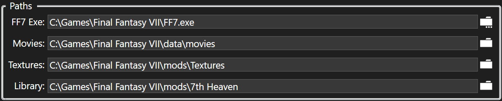
FF7 Exe: Clicknext to 'FF7 Exe' to select your game executable (typically ff7.exe which is under your Final Fantasy VII game install folder). Note: You can change your exe to a different one if required for a mod, such as the old Reunion R03e 'Menu Overhaul'. That mod required a special exe called ff7_bc.exe. Special exe files are no longer recommended because 7th Heaven supports hext patching in mods and special exes have been known to break other mods or cause weird problems. It is better for modders to use the mod constraints features in 7th Heaven to apply hext patching and compatibility with other mods rather than using special exe files. Note: 7th Heaven 2.0 does not include special exe files. If you had them before installing 7th Heaven 2.0, you may find them under the '7H2.0-BACKUP' subfolder under your game installation folder. A new highly recommended 'Menu Overhaul' mod is available called 'Enhanced Stock UI' from Chrysalis that does not require a special exe and uses your original ff7.exe file. You can also look for newer versions of the Reunion mod made for 7th Heaven, if available.
Movies: Clicknext to 'Movies' to select where your movie (FMV) files are located. These are typically under your game install's '\data\movies\' subfolder. Note: If you have the old 1998 disc version of FF7, you can manually copy your movie files to that path, or you can use the 'Import Movies from Disc' tool available in Game Launcher Settings. Alternately, you can point the Path to your DiscDrive:\ff7\movies\ folder if you want to run the movies directly from your game discs. If you don't want to use the original movies from your discs (such as wanting to use a high-resolution upscale) you can download movie mods that are available on the forums and in catalogs.
Textures: Clicknext to 'Textures' to select where your mods/Textures folder is. This is so 7th Heaven knows where to inject mod files into the Game Driver. Note: This Path needs to match the subfolder name listed on the line 'mod_path = 'in your '7H_GameDriver.cfg' file. The Game Driver looks under 'FF7 game installation folder\mods\' for this subfolder. Example: If the line in your config file reads 'mod_path = Textures' then 7th Heaven's Textures path should point to your 'FF7 game installation folder\mods\Textures' Path.
Options: Various settings that change how 7th Heaven behaves.
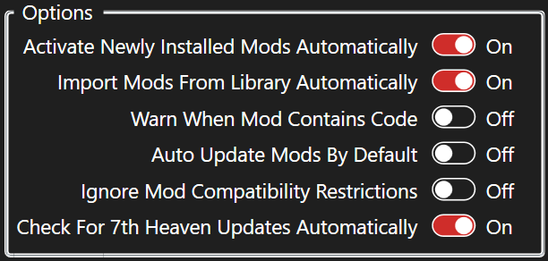
Activate Newly Installed Mods Automatically: When, any new mods you add to your library/My Mods Tab will activate automatically.
Import Library Folder Mods Automatically: When, any new mods that are detected in the Path (above) for 'Library' will be added to the My Mods Tab automatically.
Warn When Mods Contain Code: When, any time you activate a mod that contains hext patching or other executable code, you will receive a warning that it could harm your computer. Only activate mods you trust from a reliable source. Turn this if you do not want to receive these warnings every time you activate a mod with code.
Auto Update Mods By Default: When, 7th Heaven will set all installed mods to 'Auto Update/Install'. When, 7th Heaven will set all installed mods to the default 'Notify' option.
Ignore Mod Compatibility Restrictions: When (not recommended), 7th Heaven will allow incompatible mods or certain settings of mods to be activated even if they are not compatible with each other. Turn this to allow 7th Heaven to keep mods and mod settings compatible with each other.
Check For 7th Heaven Updates Automatically: When, 7th Heaven will check a server to see if a newer version of 7th Heaven is available. If a newer version is available, 7th Heaven will offer to open a web site link where you can choose to download the new version.
Shell Integration: See the Shell Integration section for information on these settings.
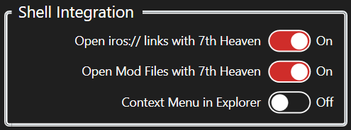
Catalog Subscriptions: Use this section to rearrange the order of, add, or remove your catalog subscription links. A catalog subscription link is a link that 7th Heaven uses to download a list of available mods offered for download through that catalog. These will show up in your Browse Catalog Tab. Popular catalogs are already included in your list by default.
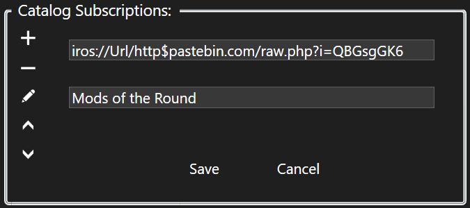
Clickto add a new link to the list. If you have the link already in your clipboard, the link will be pasted into the URL box for you automatically. Click the 'Save' button. If the catalog owner specified a Name tag in their catalog, the Name will appear automatically. If no Name is present, clickand type in a Name of your choosing then click 'Save'.
Clickto remove a catalog subscription from your list. If you accidentally delete one of the defaults and want it back, just click the 'Reset Defaults' button, but note that all settings are reset, including any other custom subscription links you may have added would be removed.
Clickto edit an existing and selected link in your list. You can update the URL and/or Name of the catalog subscription.
Clickto move the catalog subscription up in the sort order of your list. This will modify the order in which mods from this catalog subscription appear in your Browse Catalog Tab. Tip: Right-click to send the subscription link to the top of the list.
Clickto move the catalog subscription down in the sort order of your list. This will modify the order in which mods from this catalog subscription appear in your Browse Catalog Tab. Tip: Right-click to send the subscription link to the bottom of the list.
Additional Folders to Monitor: Use this section to rearrange the order of, add, or remove additional subfolders that 7th Heaven should look for modded raw game files (not .iro files). The subfolder to monitor must be under your Final Fantasy VII install folder. 'Direct' and 'Music' are required.
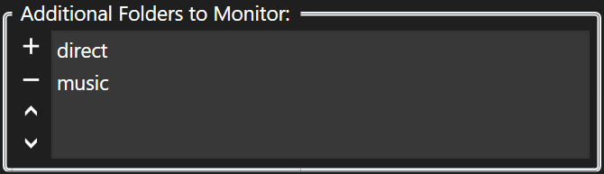
Clickto add a new subfolder to monitor. Choose the folder from the dialog, then click 'Select Folder'.
Clickto remove a folder from your list.
Clickto move the folder up in the sort order of your list. Folders higher in the list are read from first. Tip: Right-click to send folder to the top of the list.
Clickto move the folder down in the sort order of your list. Folders higher in the list are read from first. Tip: Right-click to send folder to the bottom of the list.
To Get Here: Click 'Settings' then 'Game Driver' in the Menu Bar.
What it is: Settings that affect the window mode, resolution, how the game renders graphics, and music type. The driver is what was commonly known as the 'Aali driver' or the 'OpenGL driver'. 7th Heaven includes an updated driver based on Aali's code with additional contributions from TrueOdin, Nax, and quantumpencil with further customizations made specifically for 7th Heaven 2.0.
How to Use: Click on the various tabs at the top to view available options in those categories. When you mouse over the different options, toggle buttons, and drop down menus, you will see info displayed on the bottom-left of the window. Therefore, since the Game Driver Settings screen has sort of its own built-in help, it is unnecessary to repeat everything here. If you have trouble with the Game Driver (like texture/graphics problems or crashing) you can try looking in the Troubleshooting section. Pay special attention to the info display on the window, particularly if a setting is known to cause stability issues. For the most part, all of the defaults should be fine for most people and you might only want to change things on the 'Graphics' tab. Advanced users can manually edit the '7H_GameDriver.cfg' file in their FF7 install folder.
To Get Here: Click 'Settings' then 'Game Launcher' in the Menu Bar.
What it is: The Game Launcher is a 3-in-1 feature. It includes a completely new implementation of what was previously known as the 'Game Converter', it's a replacement for the game's original 'FF7Config.exe' tool, and it's an actual game launcher that verifies everything is OK for the state of the game and your mods then starts Final Fantasy VII. The Game Launcher Settings includes options for all of these things as well as being able to select your Keyboard/Controller options, disc mounting options, and a handy 'Import Movies From Disc' feature for those people that still have the 1998 release and want an easy way to copy their movies over to the hard drive. You can also choose to add programs that you want to launch prior to running the game such as batch files or other scripts, or if using an older OS like Windows 7, you can run commands with your ISO mounting program as an example. Note: All settings for the Game Launcher are 'pushed' after you click the 'Play' button. The settings are not immediately applied when you click 'Save'.
How to Use: See below for an explanation of each option in the various sections.
Options: Settings related to mounting/unmounting the game disc, Game Launcher window visibility, and your Keyboard/Gamepad controls.
Auto-Mount Game Disc: A game disc, either an original 1998 physical disc, or a virtual disc is required for the game to run. 7th Heaven 2.0 includes a virtual game disc. When you click 'Play', the Game Launcher will search to see if you already have a game disc loaded/inserted. If it cannot find one, and when this option is, 7th Heaven will automatically load/mount a virtual game disc (ISO) for you before starting FF7. Only Windows 8 and newer support built-in disc image management, so if you are using an older OS like Windows 7, this feature will be disabled and you will have to manually insert/mount your disc before clicking 'Play'.
Auto-Dismount Game Disc: After the game closes, if this option is, 7th Heaven will automatically dismount/eject the virtual game disc. Only Windows 8 and newer support built-in disc image management, so if you are using an older OS like Windows 7, this feature will be disabled and you will have to manually eject/dismount your disc after closing FF7.
Auto-Update Disc Path: As you add or remove drives such as USB flash, DVD-ROM, virtual discs (ISOs) or external hard drives, sometimes the drive letters have a tendency to change from one letter to another (example, drive D: might become drive E: the next time it is inserted). When you run FF7 and it is expecting your disc to be drive D: but your drive was inserted or mounted as drive E:, then the game will not be able to find the disc and will refuse to start. 7th Heaven solves this problem with this option. If this option is, the Game Launcher will search for your disc, and if it changed drive letters, will update the game to look at the correct drive letter for you automatically.
Show Game Launcher: Shows or hides the detailed status/log when launching the game. If this option is, the Game Launcher window will be displayed. Otherwise, you will see status updates from the Game Launcher in the Info/Status Bar (Log) only.
Controls: The controls you have selected here will automatically be applied every time you start the game. This fixes a problem for some people where FF7 would frequently lose your configuration and make you have to setup your controls over and over. You can select a preset keyboard and gamepad button configuration from the drop down. If you want to add your own controls that you currently have set in the game, simply click, give the controls a name, then click 'OK' to save them as a new preset. If you want to delete a custom preset that you have selected, click. You cannot delete the included presets.
Compatibility: Settings that fix various compatibility issues.
High-DPI Scaling Fix: Turn thisif you are using a high DPI setting above 100% display scaling for your monitor and you notice that the Final Fantasy VII screen is cut off or not centered properly. Note: Turning this setting on can have side-effects and can cause your open programs to move around, particularly on multi-monitor setups. Alternatively, you can go into Windows Display Settings and change your DPI to 100%.
Code 5 Fix (aka 640x480 compat. flag): This should no longer be an issue starting with 7th Heaven 2.0 and this option is disabled and unselectable by default. On old versions of 7th Heaven, it was common to get an error while trying to launch FF7. This was a problem in a 3rd party tool used by 7th Heaven called 'EasyHook', not a problem in 7th Heaven itself. 2.0 includes a custom fixed version of EasyHook that hopefully resolves these problems, but includes the 'Code 5 Fix' as a fallback just in case. When the Game Launcher starts, it will automatically attempt to launch your game 7 times in the background. If launching the game fails, you will be prompted to turn this setting on and retry. The option then becomes available to you in the Game Launcher Settings. Note: Turning this setting on can have side-effects and can cause your open programs to move around, particularly on multi-monitor setups.
The error commonly seen was: 'System.ApplicationException: STATUS_INTERNAL_ERROR: Unknown error in injected assembler code. (Code: 5) at EasyHook.RemoteHooking.CreateAndInject(String InEXEPath, String...'.
Reunion Driver Fix: Starting with The Reunion R06 (the FULL installed version, NOT mod versions made specifically for compatibility with 7th Heaven!), a custom driver was poorly implemented. Rather than using a launcher, Reunion names its driver 'ddraw.dll' which is saved in the FF7 install folder. Unfortunately due to FF7's DirectX design, this causes FF7 to load this file on startup every single time, even if you don't want it to, and even if you have Reunion disabled in the Options.ini file. This creates compatibility problems with other mods and 7th Heaven because the Reunion driver is taking over the rendering engine of the game and so it ignores other mods or mod utilities' settings or requirements. What this 'fix' does, is the Game Launcher looks for 'ddraw.dll' and if it exists, renames it temporarily so that FF7 can start normally. Once FF7 starts, the Game Launcher renames the Reunion driver back. This way, 7th Heaven doesn't interfere with someone wanting to play with the Reunion mod outside of 7th Heaven, but also doesn't allow the Reunion to take over as the driver when it is unwanted. Note: This option is disabled and unselectable by default unless The Reunion R06+ is detected to be installed. If it is detected, the option turns on automatically.
Import Movies From Disc: If you have the original 1998 disc release of Final Fantasy VII, this tool will assist you with copying over the movies from your disc onto your hard drive. If all movie files are already found on your computer, this option is disabled. Just follow the prompts on what disc to insert, then click the bigimport button. Movies from that disc will be copied to your movies path. If additional discs are needed to be inserted, you will be prompted for them.
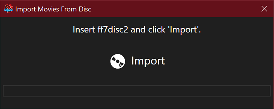
Audio Output Device: This is part of the replacement of the old 'FF7Config' program to configure your audio device. Select your desired output from the drop down list. You can either select a specific device that you want to use or, the recommended option of Auto-Switch (Windows Default). This option means that whatever device Windows is using as the default will be what the game will use. This is useful if you frequently switch between PC speakers and a USB headset for example. Clicknext to the list to test the sound output to that device. You can also clicknext to thebutton to test a specific left or right channel. You can drag the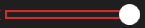to adjust the volume of music and/or SFX. You can move the slider during test playback. Turn'Logarithmic Volume Control' to enable smoother digital volume transitions. Turning'Reverse Speakers' will switch your left and right audio channels. The 'MIDI Device' drop down is largely unused and should probably stay on 'General MIDI' unless you have installed/available one of the other options. This only affects music if you have 'Original MIDI' enabled in the Game Driver Settings. Otherwise, high-quality .OGG audio is used. Note: If you select a specific audio device like a USB headset, but that device is not available when you launch the game (such as if it is unplugged), you may experience problems launching the game. Symptoms might be getting a black screen with a beep and nothing else, with the game not starting. This is why the 'Auto-Switch' option is recommended.
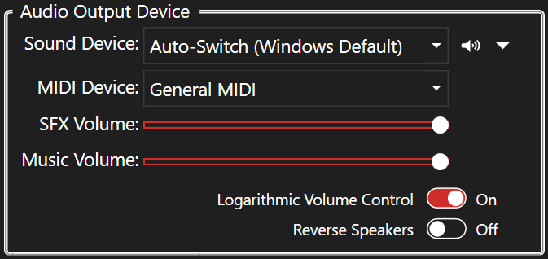
Graphics Driver Options: This is largely here only to serve as backwards compatibility for the 'FF7Config' tool. However, the 'Custom 7H Game Driver' MUST be selected as the renderer in order for the game to launch properly and for your mods to work/apply. No other option will allow mods to work.
Programs to Run Prior to FF7: Use this section to rearrange the order of, add, or remove additional programs you want to run after you click 'Play' and before FF7 starts. This is useful if you want to run a batch script with cmd.exe or a program to mount your ISO (if on an older OS like Windows 7), etc.
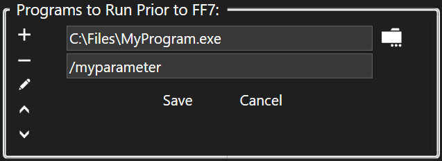
Clickthento add a new program to the list. Navigate to the program you want to run, select it, then click 'Open'. In the parameters textbox, add any command line parameters or switches you want to use with the program. Click the 'Save' button.
Clickto remove a program from the list.
Clickto edit an existing program in your list.
Clickto move the program up in the start order of your list. Tip: Right-click to send the program to the top of the list.
Clickto move the program down in the start order of your list. Tip: Right-click to send the program to the bottom of the list.
To Get Here: Click 'Settings' then 'Profiles' in the Menu Bar.
What it is: Use the 'Manage Profiles' window to load, save, copy, delete, or view your profile settings. A profile contains what mods you have in the My Mods Tab, the active or inactive status of those mods, the settings you have configured in those mods, and your mod load order. Your current active profile is always displayed in 7th Heaven's title bar in between brackets, like [Default]. When you open the 'Manage Profiles' window, your current active profile should also be selected/highlighted automatically.
How to Use: Profiles are saved automatically when you exit 7th Heaven or if you manually save them or switch profiles in the 'Manage Profiles' window.
Clickto save your current profile to a new profile name (or you can type an existing name to overwrite it).
Clickto copy the selected profile to a new profile name (or you can type an existing name to overwrite it).
Clickto delete the selected profile.
Clickto view details about the selected profile. The profile details will export to a random file name (to prevent file in-use conflicts), which will open in your default text editor and will show your 7th Heaven version followed by your mods, in order from top to bottom as they would be shown in your My Mods Tab. Details shown are the mod name, the mod ID, mod version, whether it is active or inactive, and all of the options you have configured in the Configure Mod window for that mod. All of the options you configured will show the variable names and values and new in 7th Heaven 2.0, will show the friendly names of those options and values for easier reading. See screenshot below for an example profile details view.
Click the 'Load Profile' button at the bottom to load/switch to the selected profile and close the 'Manage Profiles' window. Tip: You can also double-click the profile to load it.
 ) by category then alphabetically by name, among other things. This is to assist you with sorting your mods for best compatibility with other mods that you may have installed.
) by category then alphabetically by name, among other things. This is to assist you with sorting your mods for best compatibility with other mods that you may have installed.


 . Be sure you copy the image file to the root of your mod folder. Continue to fill out the rest of the fields which should be self-explanatory, then click the 'Generate' button. This will create (or update if you previously clicked 'Load' to open an existing mod.xml file) the XML needed for your mod.xml file. If you're happy with the results, click on the 'Save' button to save your mod.xml file.
. Be sure you copy the image file to the root of your mod folder. Continue to fill out the rest of the fields which should be self-explanatory, then click the 'Generate' button. This will create (or update if you previously clicked 'Load' to open an existing mod.xml file) the XML needed for your mod.xml file. If you're happy with the results, click on the 'Save' button to save your mod.xml file.
 , check the boxes for all of the sections you want to extract, then click the 'Extract' button.
, check the boxes for all of the sections you want to extract, then click the 'Extract' button.

 to add a new link to the list. If you have the link already in your clipboard, the link will be pasted into the URL box for you automatically. Click the 'Save' button. If the catalog owner specified a Name tag in their catalog, the Name will appear automatically. If no Name is present, click
to add a new link to the list. If you have the link already in your clipboard, the link will be pasted into the URL box for you automatically. Click the 'Save' button. If the catalog owner specified a Name tag in their catalog, the Name will appear automatically. If no Name is present, click and type in a Name of your choosing then click 'Save'.
and type in a Name of your choosing then click 'Save'.
 to remove a catalog subscription from your list. If you accidentally delete one of the defaults and want it back, just click the 'Reset Defaults' button, but note that all settings are reset, including any other custom subscription links you may have added would be removed.
to remove a catalog subscription from your list. If you accidentally delete one of the defaults and want it back, just click the 'Reset Defaults' button, but note that all settings are reset, including any other custom subscription links you may have added would be removed.

 , give the controls a name, then click 'OK' to save them as a new preset. If you want to delete a custom preset that you have selected, click
, give the controls a name, then click 'OK' to save them as a new preset. If you want to delete a custom preset that you have selected, click

 import button. Movies from that disc will be copied to your movies path. If additional discs are needed to be inserted, you will be prompted for them.
import button. Movies from that disc will be copied to your movies path. If additional discs are needed to be inserted, you will be prompted for them.
 next to the list to test the sound output to that device. You can also clicknext to the
next to the list to test the sound output to that device. You can also clicknext to the . You can drag the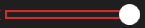to adjust the volume of music and/or SFX. You can move the slider during test playback. Turn'Logarithmic Volume Control' to enable smoother digital volume transitions. Turning'Reverse Speakers' will switch your left and right audio channels. The 'MIDI Device' drop down is largely unused and should probably stay on 'General MIDI' unless you have installed/available one of the other options. This only affects music if you have 'Original MIDI' enabled in the Game Driver Settings. Otherwise, high-quality .OGG audio is used.
. You can drag the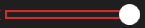to adjust the volume of music and/or SFX. You can move the slider during test playback. Turn'Logarithmic Volume Control' to enable smoother digital volume transitions. Turning'Reverse Speakers' will switch your left and right audio channels. The 'MIDI Device' drop down is largely unused and should probably stay on 'General MIDI' unless you have installed/available one of the other options. This only affects music if you have 'Original MIDI' enabled in the Game Driver Settings. Otherwise, high-quality .OGG audio is used. to copy the selected profile to a new profile name (or you can type an existing name to overwrite it).
to copy the selected profile to a new profile name (or you can type an existing name to overwrite it).
 to view details about the selected profile. The profile details will export to a random file name (to prevent file in-use conflicts), which will open in your default text editor and will show your 7th Heaven version followed by your mods, in order from top to bottom as they would be shown in your My Mods Tab. Details shown are the mod name, the mod ID, mod version, whether it is active or inactive, and all of the options you have configured in the Configure Mod window for that mod. All of the options you configured will show the variable names and values and new in 7th Heaven 2.0, will show the friendly names of those options and values for easier reading. See screenshot below for an example profile details view.
to view details about the selected profile. The profile details will export to a random file name (to prevent file in-use conflicts), which will open in your default text editor and will show your 7th Heaven version followed by your mods, in order from top to bottom as they would be shown in your My Mods Tab. Details shown are the mod name, the mod ID, mod version, whether it is active or inactive, and all of the options you have configured in the Configure Mod window for that mod. All of the options you configured will show the variable names and values and new in 7th Heaven 2.0, will show the friendly names of those options and values for easier reading. See screenshot below for an example profile details view.